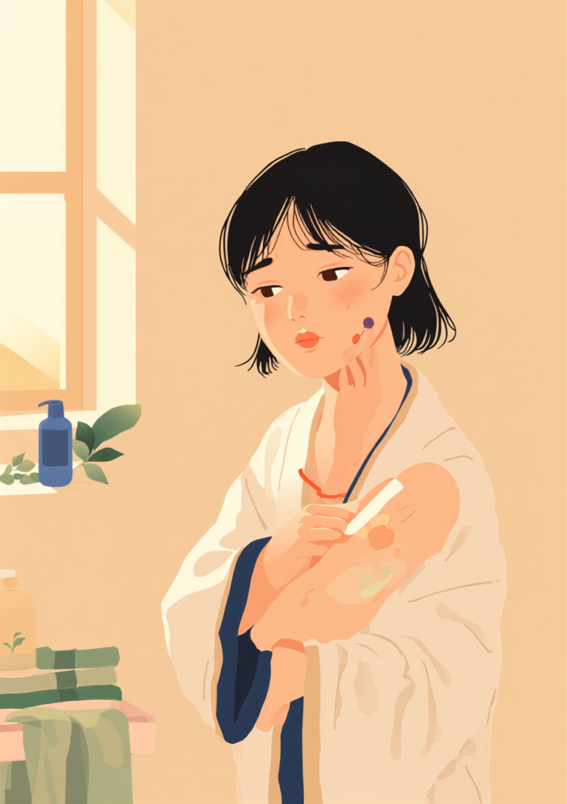
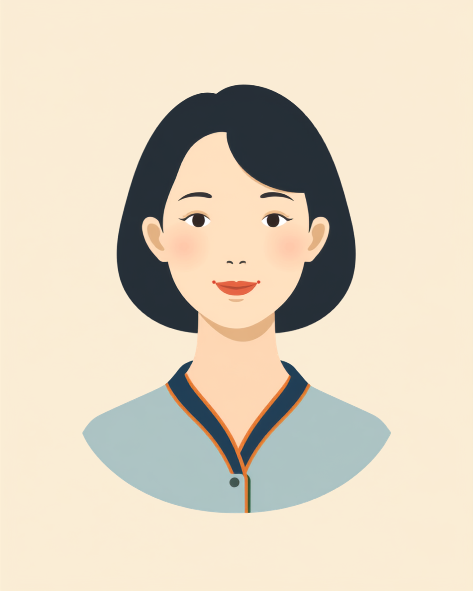

「そこだけ白くなってない?」と聞かれた朝、体がこわばった
就労支援の現場で関わってきた中で、尋常性白斑のある方から繰り返し聞いてきた言葉があります。「痛くもかゆくもないのに、毎日いちばん気を使うのは結局そこなんです」というものです。腕や首、顔など目に入りやすい場所に症状がある場合、悪気のない一言がふとした瞬間に飛んでくることがあります。「それ、日焼けした?」「洗い忘れてる?」「大丈夫、痛くない?」。どれも相手に敵意はなく、むしろ心配してくれているだけなのですが、聞かれるたびに答え方を考えなければならない小さな負担が積み重なっていきます。
本人にとっては、症状そのものよりも「今日は聞かれるかもしれない」という予測のほうが疲れる、という声もあります。会議室の照明、更衣室の明るさ、夏場の半袖。場面ごとに「今日はどう見えているだろう」と考える時間が、目に見えないところで積み重なっていきます。
「手の甲に白い部分があって、接客業なので絶対に見られるんですよね。『それ何ですか、痛いんですか』って聞かれることが月に何回かあって、最初はちゃんと説明してたんですけど、だんだん『いや、ただの体質なので』って軽く流すようになりました。正直、悪気なく聞かれてるのは分かってるんですけど、聞かれるたびに小さく傷つく自分がいて。3年経った今も、その感覚は正直あんまり変わってないです。」

半袖の季節が来るたびに、隠すか隠さないかを毎朝迫られる
尋常性白斑と仕事の付き合い方を大きく左右するもののひとつが、季節です。長袖で自然に覆える時季と、半袖や薄着が増える時季とでは、隠すためにかかる手間がまったく違います。とくに気温や湿度が上がる時季は、朝にどれだけ丁寧にカバーメイクをしても、汗で崩れてしまうことへの不安がつきまといます。
夏場は、化粧直しのタイミングひとつにも気を配ることになります。汗でカバーメイクが崩れる前に手を打ちたくても、休憩のタイミングは自分だけでは決められません。旅行や社員行事で温泉やプールに誘われたときの気の重さも、症状のない人にはなかなか想像しにくい部分かもしれません。
「顔と首に出ていて、毎朝ファンデーションを塗ってから出勤しています。正直めちゃくちゃ時間かかるし、夏場は汗で崩れて、お昼過ぎには色が透けてくるのが本当に怖いんです。去年、社員旅行で温泉に行くことになって、3日くらい前から憂鬱で仕方なかったです。結局『生理中なので』って嘘をついて入らなかったんですけど、なんでこんな小さな嘘のためにこんなに悩まなきゃいけないんだろうって、帰りの新幹線でぼんやり考えてました。」
職場にどう伝える、うつる病気ではないという誤解を解くために
尋常性白斑は、感染症ではありません。それでも見た目の印象だけで「何か悪い病気なのでは」と誤解されてしまうことがあります。この誤解が広がると、必要以上に距離を置かれたり、腕や手に触れる作業を避けられたりと、本人が望まない形で職場での関わり方が変わってしまうことがあるようです。
全部を説明しなくてもいい、という考え方
症状の原因や治療の見通しまで詳しく説明する必要はありません。むしろ、業務に関わる範囲に絞って短く伝えるほうが、双方にとって負担が少ないとされています。
- 「これはうつる病気ではないので、普段通り接してもらって大丈夫です」
- 「体調に影響があるわけではないので、特別な配慮は基本的に必要ありません」
- 「聞かれたときは、そのとき答えられる範囲でお答えします」
- 「気温が高い時季は化粧直しの時間がほしいので、休憩を少し調整させてもらえると助かります」
信頼できる上司や同僚にだけ先に伝えておき、そこから必要な範囲でチーム内に広がっていく、という進め方をとっている方もいるようです。就職活動の段階から伝えるかどうかは人によって考え方が分かれるところですが、面接で必ず開示しなければならないという決まりはありません。
使える制度と、一人で抱えないための相談先
障害者手帳の対象になりにくいという現実
尋常性白斑は、原則として身体障害者手帳の対象にはなりにくいとされています。症状の範囲や他の症状との重なり方によって状況は個別に異なるため、正確なことは自治体の障害福祉窓口や主治医に確認することをお勧めします（2026年9月時点の情報です）。手帳の対象になりにくいからこそ、職場での理解や配慮は、制度よりも本人と周囲とのコミュニケーションに委ねられる部分が大きい、という側面もあります。
医療費や治療についての相談先
治療の選択肢や費用について迷ったときは、まず皮膚科医に相談することが基本になります。症状の範囲が広い場合や、他の自己免疫疾患を伴う場合には、指定難病の医療費助成制度の対象になるケースもあるとされていますが、これは尋常性白斑そのものというより併存する疾患の状況によって判断が分かれる部分です。個別の状況については自治体の窓口や医療機関のソーシャルワーカーに確認することをお勧めします（2026年9月時点の情報です）。
相談できる窓口
- 皮膚科医（治療方針や、症状についての正確な情報の相談）
- 職場の産業医（50人以上の事業場に選任義務あり）
- 自治体の障害福祉窓口（手帳や制度の対象範囲についての確認）
- 就労移行支援事業所（職場とのコミュニケーションを含めた就労準備の相談）
よくある質問
関連記事
この記事に、聞いてみたいことはありますか？
「自分の場合はどうなんだろう」と思ったことを、気軽に書いてみてください。いただいた質問は個別にお返事したうえで、匿名で記事にすることがあります。
mimemime代表。就労支援の現場経験をもとに、障がいのある方の働く不安に寄り添う記事を執筆。